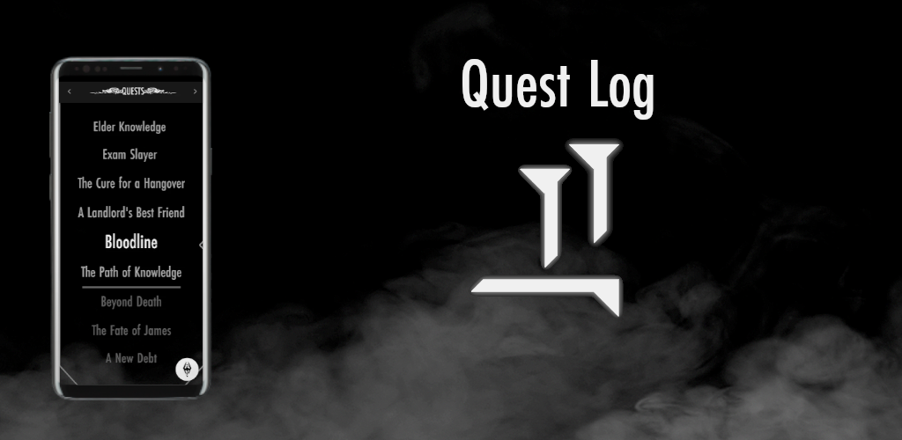
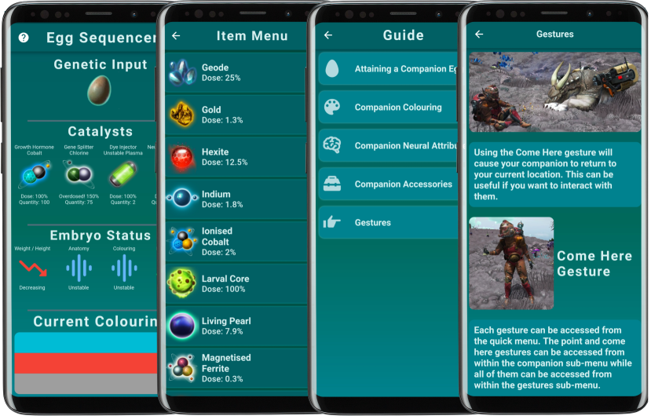
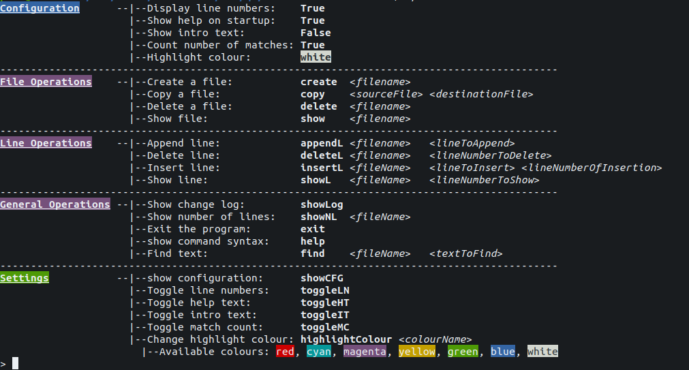

Quest Log
Flutter | Dart
A to-do list application which mimics the quest log system often seen in RPG games.
As of 30/06/2022, the app has over 4000 downloads and 80 5-star ratings combined across the Google Play Store and the Apple App Store.
NMSC
Flutter | Dart
A companion app to the popular space exploration game No Man's Sky.
As of 06/05/2022, the app has over 500 downloads on the Google play store.
A Level Computer Science Revision Tool

Java | JavaFX | Python
A revision tool for A level computer science. Allows the user to study using 4 different modes. Interfaces with database for storing study content and account information. Makes use of freeTTS for text-to-speech.
Command Line Text Editor
C
Command line editor written in pure C. Allows user to perform basic functions like creating, copying, deleting and displaying a file as well as specific line operations such as insert, append and delete.